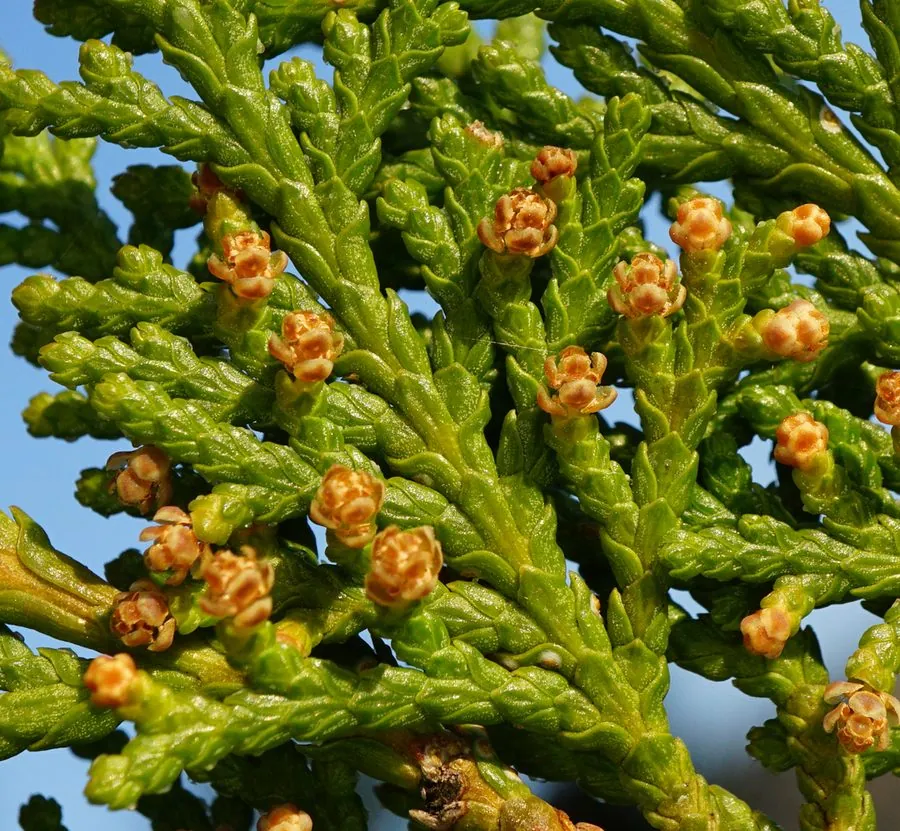

乔木 · 植物界
侧柏 Platycladus orientalis

中国原产的常绿针叶乔木，树冠塔形，枝叶扁平呈鳞片状，四季常青，是庙宇、墓地与庭院常见的树种。
- 分类
- 门裸子植物门纲松柏纲目松柏目科柏科属侧柏属
- 栖息环境
- 海拔 1500 米以下的山坡、丘陵与石灰岩山地，耐寒耐旱耐瘠薄
- 地理分布
- 中国各地广泛分布与栽培，以华北、西北及黄河流域最常见
- 保护级别
- 暂无评估；中国未列入国家重点保护野生植物名录
物种志
侧柏为常绿乔木，高可达 20 m，树皮红褐色、呈条片状纵裂；树冠幼时塔形，老时广圆形，小枝扁平并排在一个平面上，叶片鳞形、交互对生，紧贴小枝，两面均为绿色。雌雄同株，雄球花黄色、生于小枝顶端，雌球花被白粉；球果卵圆形，长 1.5–2.5 cm，幼时蓝绿色，成熟时红褐色并开裂，种子长卵形、无翅。
侧柏原产中国，分布几遍全国，耐寒、耐旱、耐瘠薄，对土壤要求不严，在石灰岩山地也能生长，是北方重要的荒山造林与水土保持树种。木材致密、耐腐，是建筑、家具与雕刻良材；枝叶可入药，中药“侧柏叶”能凉血止血；种子称“柏子仁”，可养心安神。侧柏寿命极长，陕西黄帝陵的“轩辕柏”相传为黄帝手植，树龄逾五千年，是中国最有名的古树之一。
形态与习性
- 株高可达 20 m，树冠塔形
- 花期3–4 月，雄球花黄色
- 球果成熟9–10 月，种子无翅
- 光照喜光，幼苗期耐阴
- 水分耐旱，不耐积水
- 土壤适应性强，石灰岩山地亦可生长
- 主要用途建筑与雕刻用材、侧柏叶入药、荒山造林
趣味知识
- 侧柏的小枝扁平，叶片鳞形紧贴枝条，从侧面看像压扁的扇子。
- 陕西黄帝陵的“轩辕柏”相传为黄帝手植，树龄逾 5000 年，被称为世界柏树之父。
- 侧柏的种子叫“柏子仁”，是传统中药，具有养心安神的作用。
- 侧柏耐干旱瘠薄，在北方石灰岩山地常作为荒山造林的首选树种。